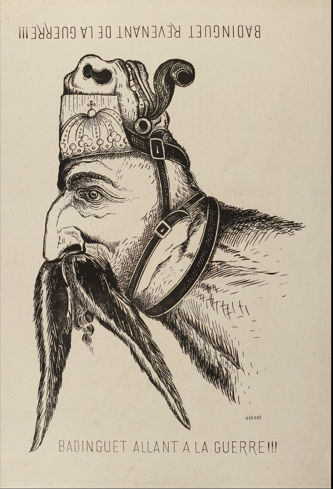
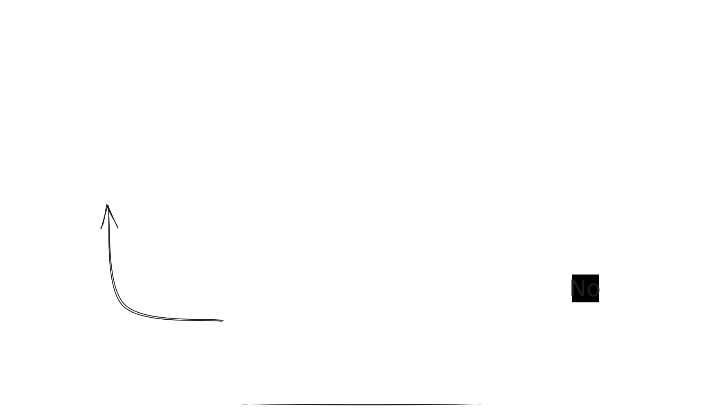
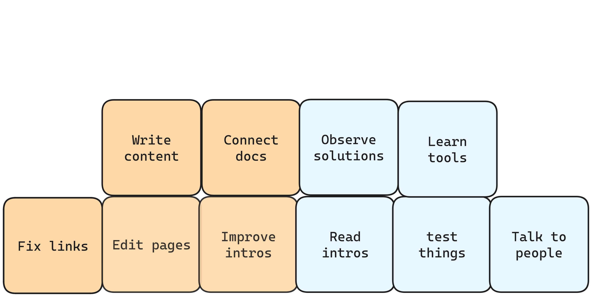
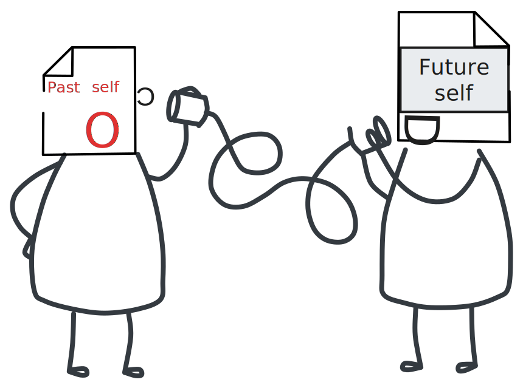
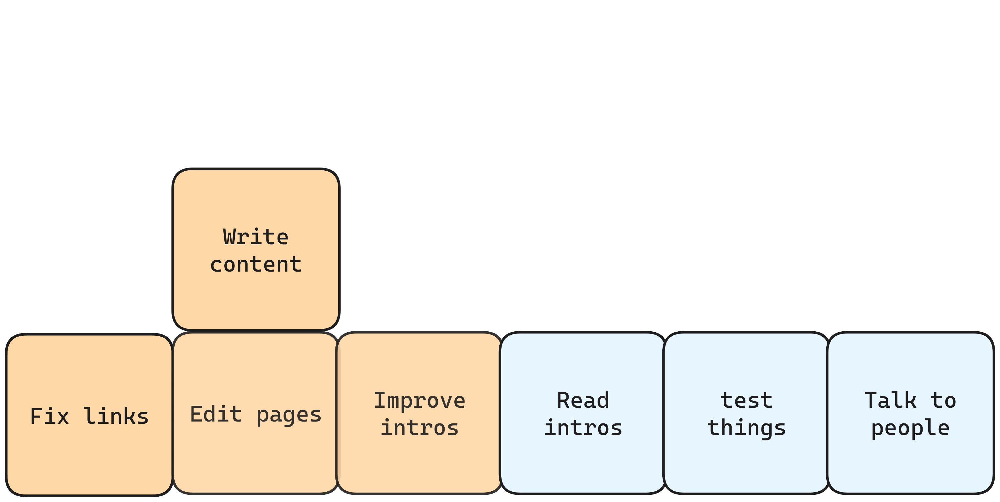
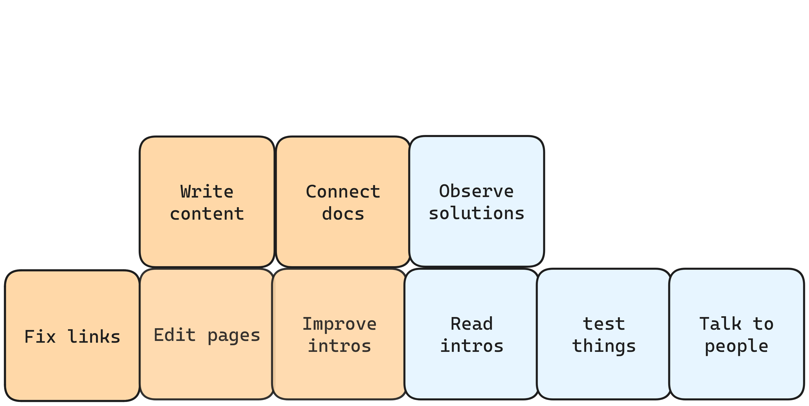
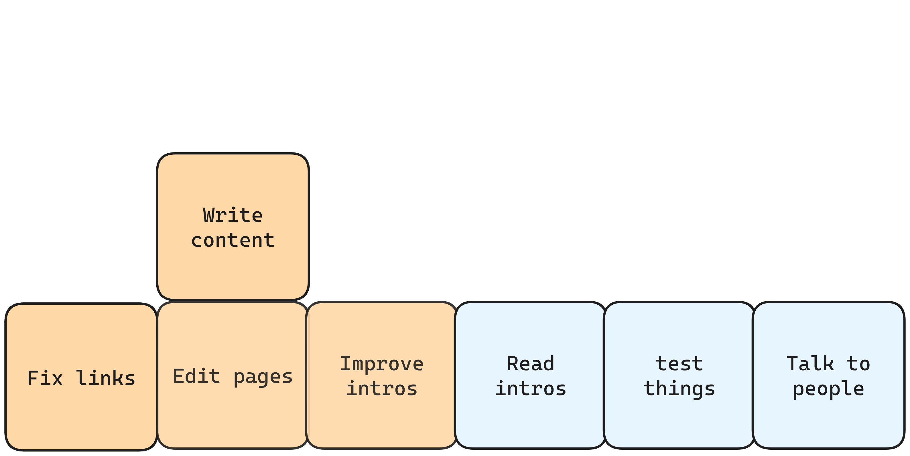
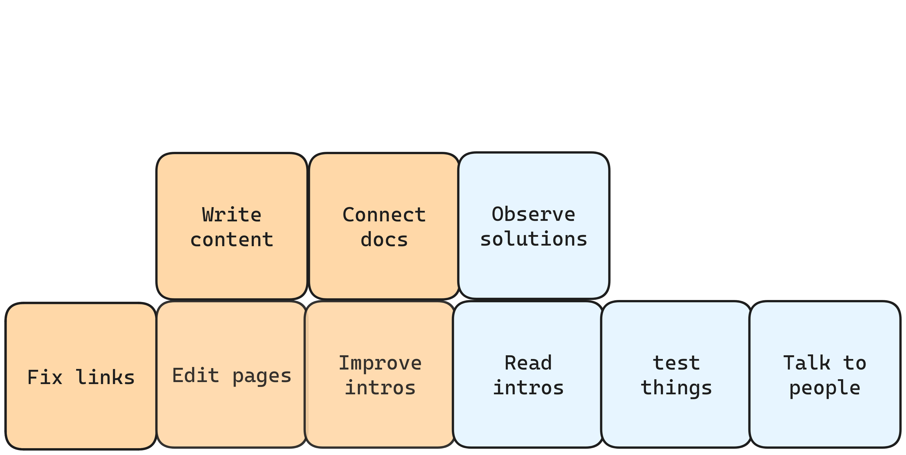

Mandatory Intro
Matt Dodson. Technical writing and miscellany.
Work with me @ wellshapedwords.com
Not trees, but graphs
A ground-up approach to fixing a docs site.
Behold the radient city!

The bird's eye view

The bird's eye view


Problem: people are not birds
People are not birds


The alternative: slow and organic growth


This talk is about taking
the view from the ground
Instead of architecture
from the view of the walker...
information
architecture
from the view of the
reader.

Trees vs. Graphs
(Pssst....a tree is a graph)A site is a tree (for writers)
$ tree docs/
docs/
├── colophon
│ ├── bug-bounty.md
│ ├── img
│ │ └── table-overflow.png
│ ├── _index.md
│ └── problems.md
├── essentials
│ ├── _index.md
│ ├── practices.md
│ ├── principles.md
│ └── reading-list.md
├── _index.md
├── posts
│ ├── antipattern-allows-you-to.md
│ ├── good-docs-aim-for-universal-design.md
│ ├── hugo-abbreviation-shortcode.md
│ ├── hugo-inline-shortcodes.md
│ ├── _index.md
│ ├── linkchecking
│ │ ├── benchmarks.md
│ │ ├── data
│ │ │ ├── broken-link-checker.txt.gz
│ │ │ ├── linkchecker.txt.gz
│ │ │ ├── linkinator.txt.gz
│ │ │ └── muffet.txt.gz
│ │ ├── how-i-check-links.md
│ │ ├── _index.md
│ │ └── link-check-your-site.md
│ ├── sentence-repair.md
│ ├── seo-the-docs
│ │ ├── index.md
│ │ └── spam-scam-continuum.svg
│ ├── shortcode-headings-in-toc.md
│ └── split-files-to-save-time.md
└── work
├── _index.md
├── portfolio.md
├── services.md
└── testimonials.md
A site is cyclical graph (for readers)
Google is not a tower
Google is not a tower
It's a subway train
The false allure of the
top-down approach
Awkward:
sometimes writers know less than readers

Documentarian's dilemma

Documentarian's duality
Don't be the intellectual ignoramus
Become the ignorant sage

They are the same image
Part 2. Strategies
Onboarding?
No thanks!
Instead, how about...
Nonboarding
Read docs and test the application.
View doctown from the reader's eyes.
Try things out
and find broken flows
Then interview internal members
Where does traffic flow?

You can look at logs, too.
Map the most important areas
The work radiates outwards
Start with the easy stuff
Architecture: the stuff that's hard to change. —Dylan Beattie
Shearing layers

Documentation shearing layers
Work on the ground
Bottom-up maintenance
Bottom-up maintenance

Bottom-up maintenance
Fix broken links
Make obvious edits and trims
Make obvious edits and trims

Write better intros
Early field research
Read the first chapter of a book on your subject
Talk to people who talk to users
Observe them!
First practice
Ask questions
Ask questions
(preferably in writing)Midlevel
Inter-page maintenance
Inter-page maintenance
How do the pages speak to themselves?
Isolate content into types
Make templates
Improve flow through links
Standardize lexis
Standardize lexis
terminology
Better content
Write tutorials for your past self
Write tutorials for your past self
Add diagrams and supportive content
Getting to know your readers
Reading industry articles
Read issues—especially issues about main topics
Beyond beginner skill
Test examples, try to reproduce issues
Make a plausible task
Develop skills that support your tool.
Don't forget to test your docs
Moving on up
Beyond useful
Beyond useful: beautiful

Deep writing
Multi-part tutorials
Topics on how to use the app in context
How it works under the hood.
At last, perfect docs
But enhancement never ends
Enhance presentation
Write meta-documentation
Deep knowledge
Understand the tool's limitations
Explore real-world implementations
Finish the book?
Expertise
Participating in design discussions
Could you stand-in for a solutions person?
Circulation

The view from up top
The view from up top
 


